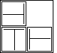

| Using a glue stick, to a 2 by 2 square of paper attach attach three pictures in the correct orientations and positions for the selected pattern. |
| Secure this piece of paper to the wall, at the same height as the first picture and several inches to the right of it. |
| This is the first stage of the display. |
|  |
| Three pictures oriented and positioned on a 2 by 2 square makes the first stage of the display. |
Return to Procedure